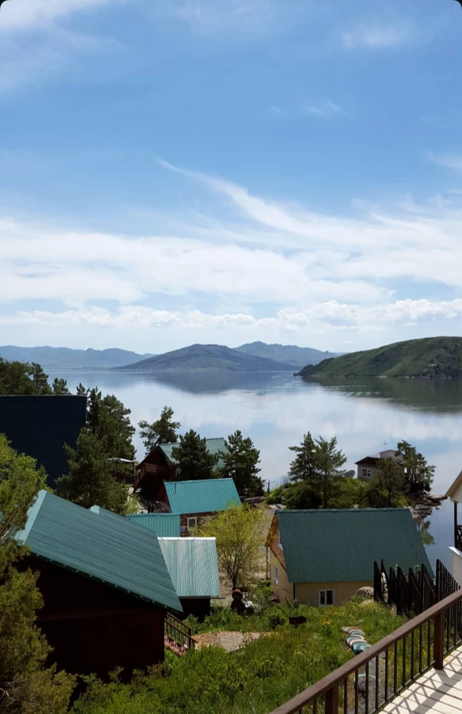
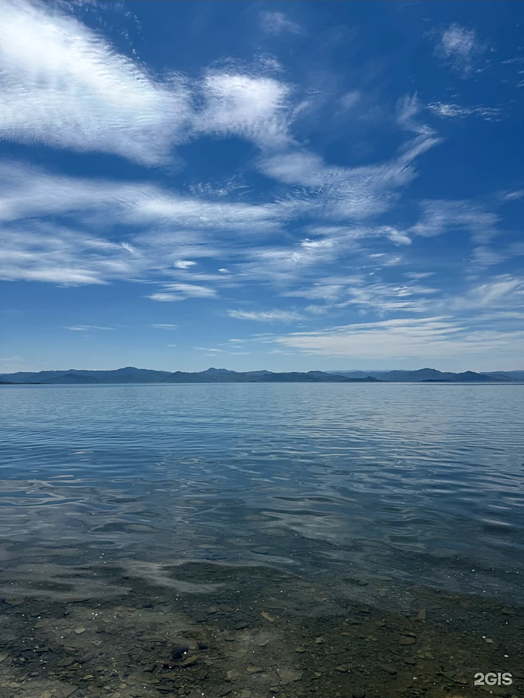
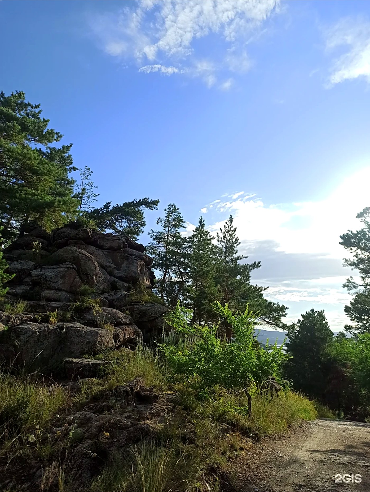
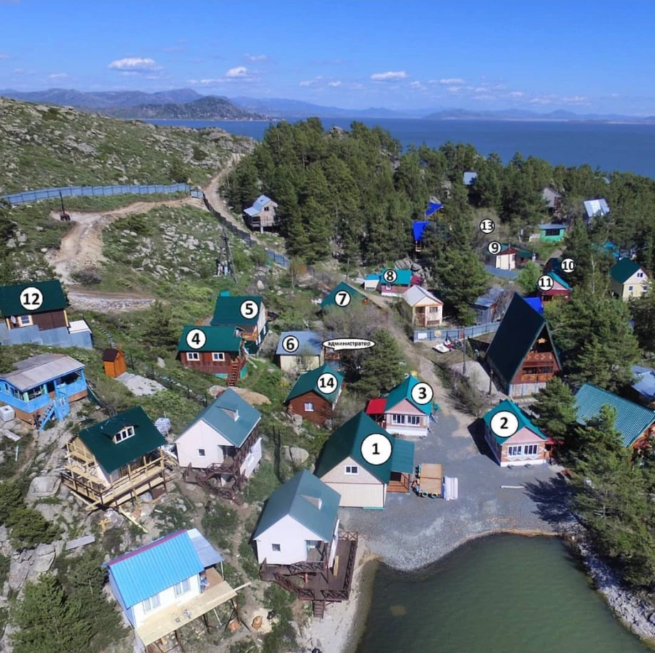

База отдыха «Яры»
Домики среди сосен и скал на берегу Бухтармы. Тихий залив, обустроенный пляж рядом и мангал у каждого дома.
Правильное место для хорошего отдыха
База отдыха «Яры» находится в Восточно-Казахстанской области, в 6 километрах от посёлка Новая Бухтарма, на берегу Бухтарминского водохранилища. Одно- и двухэтажные домики стоят на склоне над заливом — у самой воды и повыше, с видом.

Выберите домик
Чистая вода, скалы и сосны
Прозрачная вода у берега, горы на горизонте и сосновый лес на скалах — за этим сюда и едут.


Всё для спокойного отдыха
Пляж рядом
Обустроенный пляж в двух шагах от базы и собственный тихий залив.
Сосны и скалы
Домики стоят на склоне среди сосен — воздух, тень и вид на воду.
Обработка от клещей
Ежегодно вся территория проходит санитарную обработку от клещей и прочих паразитов.
Своя кухня
В домиках кухня с гарнитуром, техникой и посудой — готовьте как дома.
Мангал у дома
У каждого домика мангал: шашлык на закате входит в программу.
Спутниковое ТВ
В каждом домике телевизор со спутниковыми каналами.

Залив, сосны и домики на склоне
- Одно- и двухэтажные домики вместимостью от 4 до 9 человек
- Есть новые дома 2016–2019 годов постройки
- Домики у самой воды и на возвышенности с видом на залив
- Рядом обустроенный пляж
Забронируйте домик на лето
Позвоните или напишите в WhatsApp — подскажем свободные даты и подберём домик под вашу компанию.